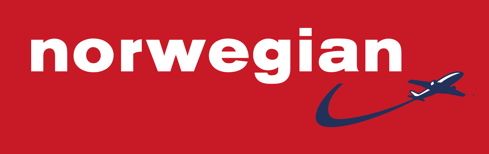

Somos una agencia de viajes especializada en las Repúblicas Bálticas. La misión de NuskaTravel es dar a conocer estos tres desconocidos pero maravillosos países del nordeste europeo: Lituania, Letonia y Estonia.
Ofrecemos circuitos organizados, así como packs de vuelo + hotel por si deseas explorar las Repúblicas Bálticas por tu cuenta.
¿Por qué viajar a las Repúblicas Bálticas?
No son parques temáticos como otras ciudades europeas, por lo que mantienen más puro su auténtico carácter.
Son bastante más baratas que Europa Occidental, por lo que el dinero te cundirá mucho más.
Su historia es apasionante. Situadas en una encrucijada de caminos, los tres países combinan influencias de varios países, principalmente de Rusia, Alemania y Suecia.
La gente local siempre estará dispuesta a ayudarte: quítate de la cabeza los tópicos sobre la gente de Europa Oriental, no son unos monstruos.
Descarga nuestros folletos con circuitos organizados:
Tenemos acuerdos con las siguientes aerolíneas que unen Madrid o Barcelona con Vilnius, Riga y Tallinn:

Los hoteles que ofrecemos en las ciudades de los tres países suelen ser de 3 o 4 estrellas. Son los siguientes:
VILNIUS:Hilton Garden Inn (****) Gedimino Prospektas 44B. Artis (****) Totorių Gatvė 23.
RIGA:Radisson Blu Daugava (****) Kūgu Iela 24. Tallink Hotel (****) Elizabetes Iela 24.
TALLINN:Metropol Spa Hotel (****) Roseni 9. Nordic Hotel Forum (****) Viru Väljak 3.
KAUNAS:Center Hotel (***) Savanorių Prospektas 66. Best Western Hotel Santakos (****) J. Gruodžio Gatvė 21.
KLAIPEDA:Amberton Hotel (****) Naujojo Sodo Gatvė 1A. Bohema (***) Galinio Pylimo Gatvė 16.
DAUGAVPILS:HomeLike Hotel (****) Mihoelsa Iela 66. Biplan City (***) Viestura Iela 21.
VALMIERA: Wolmar (****) Tērbatas Iela 16A, Luca (***), Lucas Iela 2.
TARTU:Art Hotel Pallas (***) Riia 4. Hotel London (****) Rüütli 9.
PÄRNU:Tiia Majutus (***) Nikolai 28. Estonia Spa Resort (****) Tammsaare Puiestee 6.